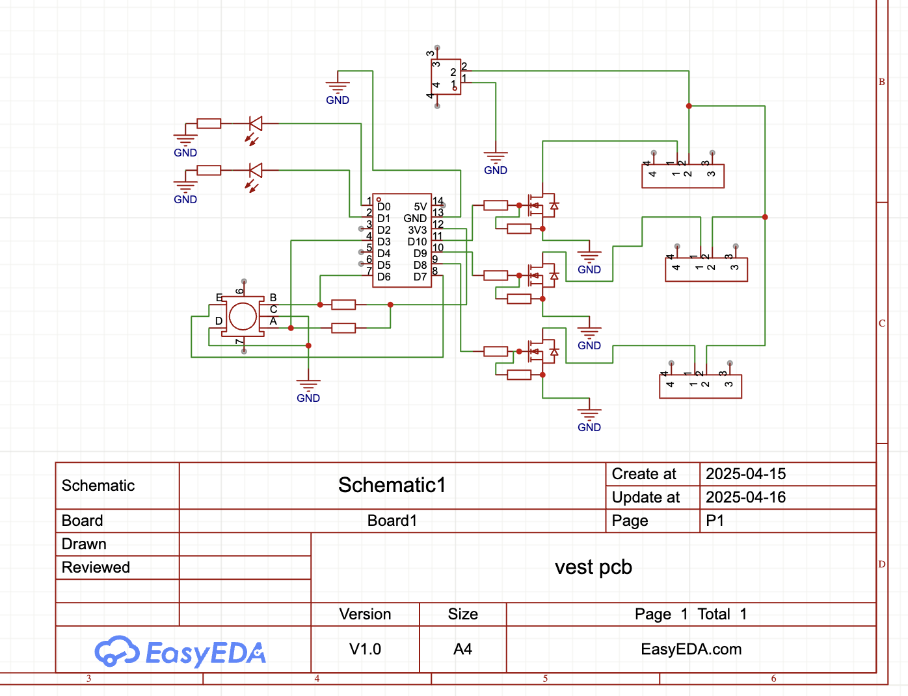
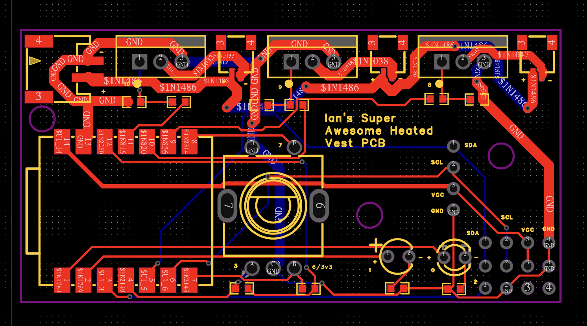
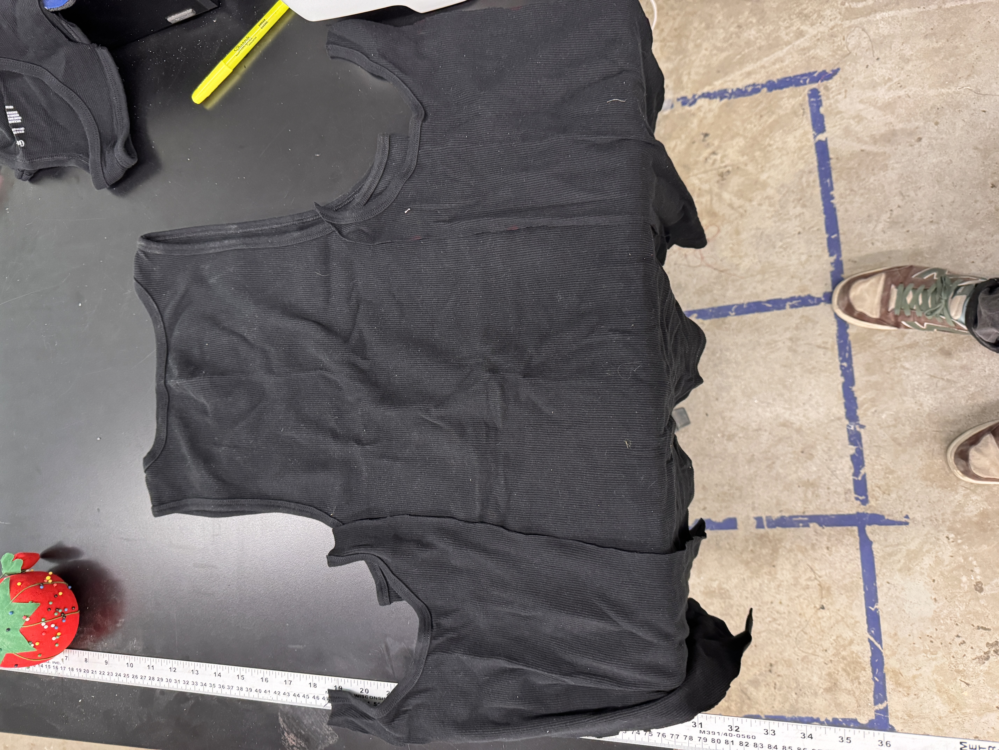
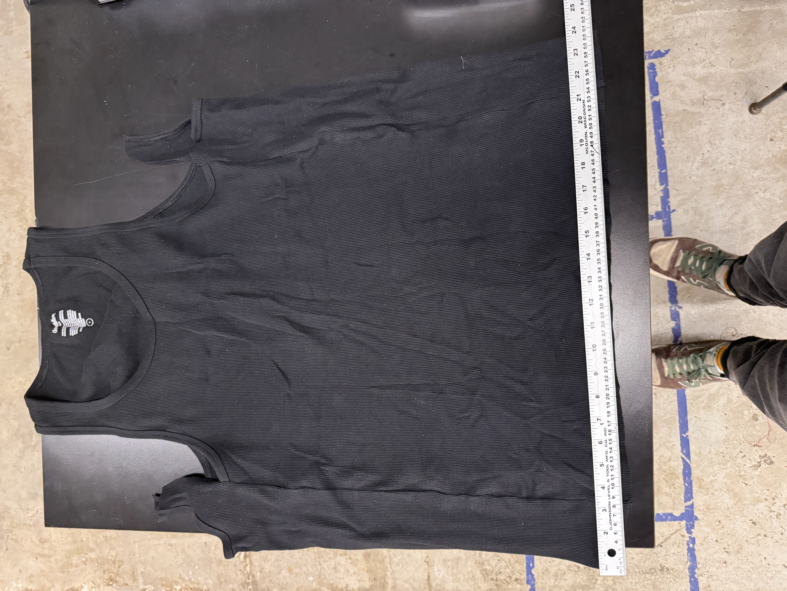
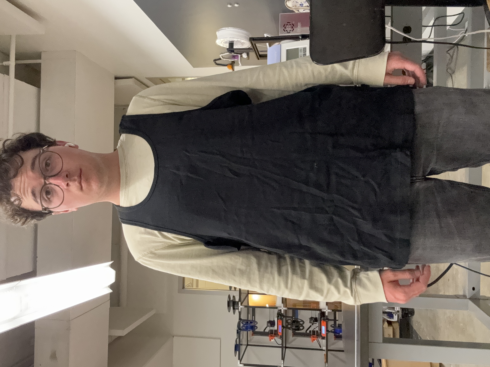
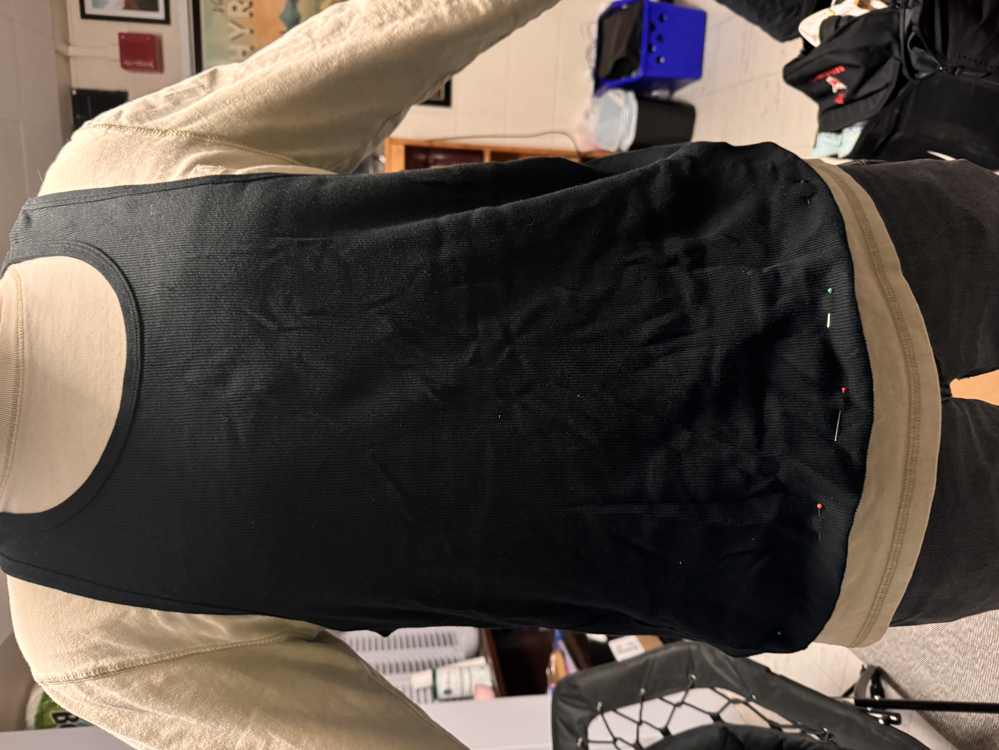
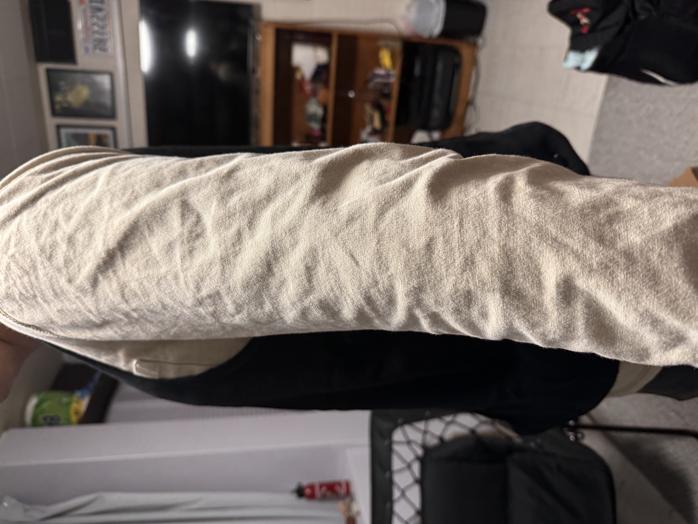

Final Project

Final Project WOOOOOOO
In starting to plan for the final project, the project that I am leaning towards is heated clothing, specifically a thin, wearable vest that has heating elements on it. This would be built such that I could wear it underneath any of my existing jackets, and it would be easily washable if need be. With that in mind, here is the bill of materials that I came up with:- Arguably the most crucial aspect of the heated vest is the heating element. I think that the best and cheapest way to make this happen would be to use positive temperature coefficient (PTC) heating pads. They are quick to warm up and they are able to self regulate their own temperatures to avoid overheating and causing a fire under my jacket. I also want them to cover a decent amount of area. I was thinking about using 4 or 6 (see battery discussion) of these heating pads
- I also will need a battery to power these heating elements, which seems like it will be the most challenging and expensive item. I would like to get at least 4-5 hours of battery life from this vest, and ideally I would like something closer to 6-8 hours of battery life for the full days that I will spend working outside in the cold. The easiest voltage to work with is 5V, as that is what both the microcontroller and the heating pads run on, but other voltages are viable with step-up/step-down converters. If I have 4 pads, each of which are drawing 600mA, I need the battery to be rated to at least 2.4A, but I would prefer if I had some more headroom, so I looked for 5V 3A batteries. Based on my (potentially incorrect) math, just powering the 4 heating pads wired in parallel and assuming no loss due to the rest of the electronics, a 10,000mAh battery gives me ~4 hours of battery life. Realistically, this would be less, so I want a higher capacity battery. A 20,000mAh battery would likely give me 6-7 hours of real battery life, so that is what I was looking at. I saw some batteries like this one that fit these requirements, but seem a little sketchy. However, I could pull some clever wiring shenanigans and get 6 heating pads, which would provide more warmth, and potentially use a less sketchy battery. If I wired 3 pairs of heating pads in parallel, with each pair wired in series, I would draw 10V and 1.8A of current, which is a (somewhat) compatible demand for lots of power banks that exist already for phones and laptops. I found this one, which is capable of outputting either 9V or 12V with USB PD and can handle 1.8A. It is a little big, but I think that this is the best way of handling power for this project, and it will be able to use 6 heating pads to keep me even warmer. It also is nice because with multiple ports, I can plug the microcontroller into a 5V port directly while also having 9V going to the pads.
- USB PD Trigger/Decoder board to get 9V out of the power bank (pads will run at 4.5V instead of 5V, but with more pads this should be fine) like this one
- JST connectors for modular pad connections for easy washing
- ESP32 or Xiao for the brains of the operation
- Power switch (rocker switch) and indicator LED
- Rotary encoder for temperature control
- Small screen to display battery level and temperature
- Temperature sensor (NTC thermistor maybe?)
- 22-24 AWG wire
- USB A to microUSB cable
- Polyester or neoprene to make the vest itself
- Waterproof material to make a pouch to house the microcontroller
- Velcro or snaps to make things easily removable for washing
- 3/27 - MVP: get ESP32 to turn the heating elements on and off
- 4/15 - Ramping it up: integrate temperature control into ESP32
- 4/29 - Learning to sow: make the vest itself
- 5/6 - Putting it all together: putting all the electronics onto the vest and buttoning it all up
Integrated Project
My working on the integrated project consisted of two parts - designing a PCB and learning to sow. The first part, designing a PCB was a slow-going process, but EasyEDA made the process relatively straightforward. The biggest challenge in this part was designing electronics without ever being able to actually test them - just hoping that they work. I did some preliminary breadboard testing to make sure that all of my theories were correct, but in the end it was essentially just scaling up my MVP to have three heat pads and work on two different power circuits. I have designed one other PCB before, but that one came with a mostly made gerber file already and just required some tweaks, so starting totally from scratch was tough. It took many hours of staring at datasheets from random websites and using the worst search function know to mankind on the LCSC website to find the parts that I was looking for, but once I did, I was able to plop them into the schematic. I connected the heat pads to a circuit that will use 12V input power, though I later realized that I could've streamlined this process since the PD trigger boards are female connectors and not male ones, so it would be board-side and not battery-side, so there is a space for a JST input connector on the board, but I will have to mount the trigger board separately. The LED and rotary encoder work on 5V power, and I added a small OLED screen mount so that I can easily display statistics like temperature and goal temperature. The roatary encoder will be harvested from a board that we already have in the lab, and the transistors are parts that we already have, so I only had the resistors surface mounted.





